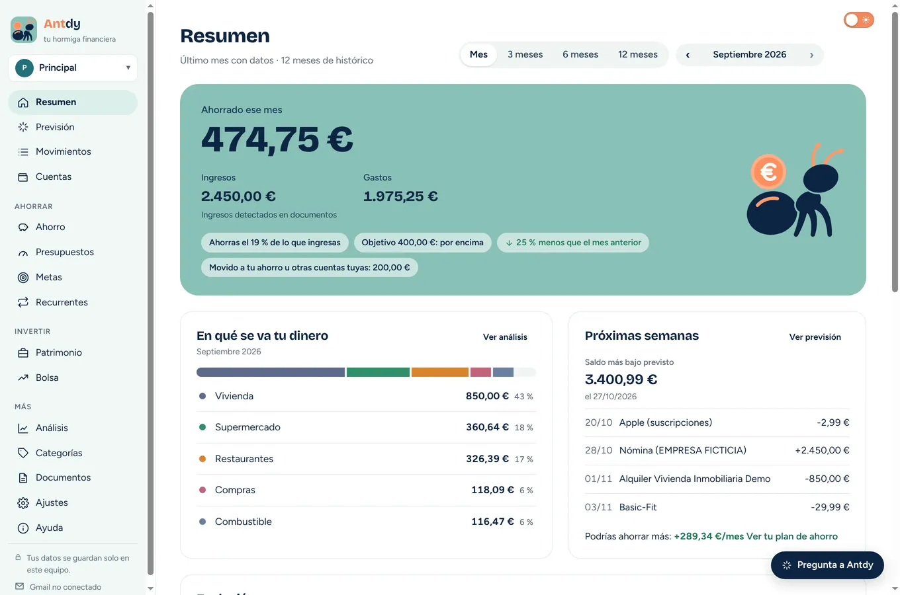
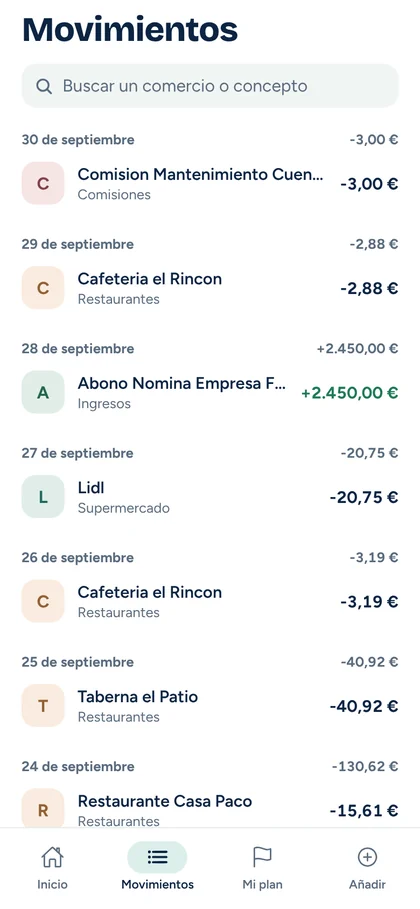
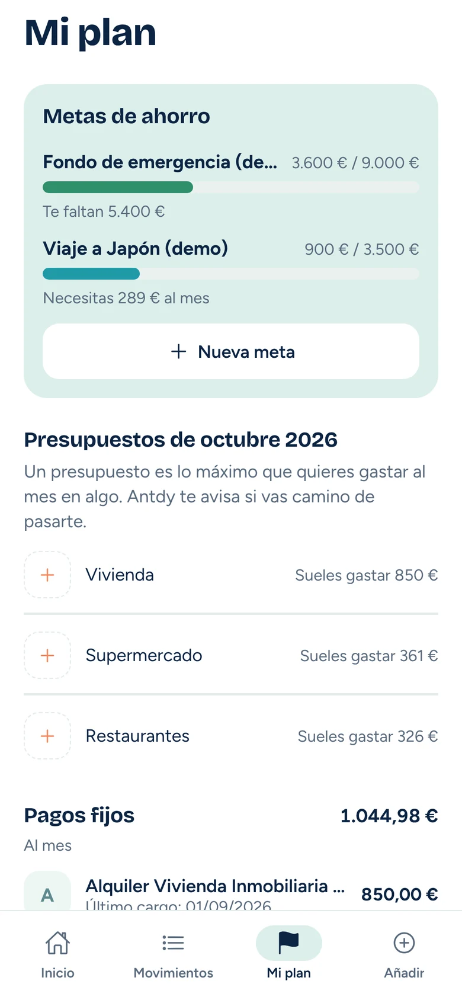

Lee los extractos que ya descargas:BBVACaixaBankimaginSantanderSabadellINGOpenbankBankinterN26RevolutNorma 43
Tres pasos y ya lo sabes.
-
Descarga Antdy
Instálala en tu ordenador con Windows. No pide registro ni correo, y se actualiza sola.
-
Importa tu extracto
Arrastra el PDF, Excel o CSV que descargas de tu banco, o deja que Antdy lo busque en tu Gmail.
-
Mira cuánto ahorras
Antdy ordena tus gastos, separa lo que mueves entre tus cuentas y te da la cifra: ingresos menos gastos, mes a mes.
Tus cuentas no salen de casa.
Antdy no tiene servidores. Lo que importas se queda en tu ordenador y en tu móvil, y nadie más puede verlo.
Sin registro ni claves del banco
No creas ninguna cuenta ni das tus contraseñas. Importas los extractos que ya descargas de tu banco.
Bajo llave
Un PIN, tu huella o Windows Hello para abrir la app. En el móvil, además, los datos van cifrados.
Sincroniza con tu propio Drive Con la app del móvil
El ordenador y el móvil se ponen al día con una copia cifrada en tu Google Drive que solo tus dispositivos saben abrir.
En tu ordenador · gratis
Todo lo básico, gratis y sin fecha de caducidad.

Importa en un momento
Arrastra el extracto o deja que Antdy lo encuentre en tu Gmail. Quita los duplicados y reconoce los traspasos entre tus cuentas.
Apunta un gasto
Un pago con tarjeta que aún no está en el extracto cuenta ya en el mes. Al importar, se une con el movimiento del banco y nunca cuenta dos veces.
Gastos ordenados solos
Categorías automáticas y reglas que aprenden de tus cambios: ese cargo de PayPal de 6,99 € pasa a llamarse «Crunchyroll».
Presupuestos y metas
Cómo vas este mes en cada categoría y cuánto te falta para el viaje o para tu colchón.
Previsión
Tu saldo día a día durante los próximos 60 días, con nóminas, recibos y cuotas, y cómo acabarás el mes.
Avisos que importan
Un presupuesto a punto de acabarse, un cargo repetido o fuera de lo normal, una subida de precio o un recibo que está al llegar.
Pregunta a Antdy
Escribe lo que quieras saber, como «¿Cuánto gasté en restaurantes este mes?», y te contesta con tus datos.
Bolsa y patrimonio
Tus acciones, tus cuentas y todo lo que tienes, en el mismo sitio que tus gastos.
Varias personas, un ordenador
Cada persona con su perfil, su PIN y sus datos totalmente separados.
Cifras que cuadran
«Comprobar mis números» revisa que el ahorro, las categorías y los saldos coincidan con tus extractos, y te explica cualquier diferencia.
App del móvil · gratis
El móvil para el día a día. El ordenador para entenderlo.
Cuatro pestañas y una idea por pantalla: cuánto llevas ahorrado, tus movimientos, tu plan del mes y añadir un extracto o un gasto.
- Apunta un pago con tarjeta al momento. Cuando importas el extracto, se une al movimiento real y no cuenta dos veces.
- Abre el extracto desde el correo o la app del banco con «Compartir → Antdy».
- Lo que haces en el móvil aparece en tu ordenador, y al revés.


Antdy Plus · en el ordenador · gratis por ahora
Un plan para gastar menos, hecho con tus propias compras.
Plus convierte tus movimientos en planes con fecha y pautas concretas, y los sigue solo cada vez que importas un extracto.
Planes de ahorro personalizados
De cuánto a cuánto bajar, en cuántas semanas y cuánto adelanta tus metas. Te avisa si te desvías.
Análisis a fondo
Flujo del dinero, comercios, hábitos, ritmo del mes, gasto fijo y variable con tu inflación personal, e ingresos.
Informe en PDF
Tu periodo resumido, listo para guardar o para repasarlo en casa.
Lo que venga después
Las funciones que se añadan a Plus te llegan sin pagar más.
Supermercado: de 410 € a 340 € al mes
Ahorras 70 € al mes y 840 € al año. «Entrada del piso» se adelanta 2 meses.
Vas 12 € por debajo del objetivo de esta semana
- Vas 15 veces al mes, y 7 son compras de menos de 15 € en tiendas de cercanía.
- Una compra grande el sábado y una reposición el miércoles, con lista cerrada.
- Tope semanal de 90 € las semanas 1 a 4 y de 85 € las semanas 5 a 8.
Un precio claro, como tus cuentas.
Antdy
Gratis
En el ordenador y en el móvil, para siempre.
- Importar extractos y Gmail
- Movimientos, categorías y reglas
- Presupuestos, metas, previsión y avisos
- Bolsa, patrimonio y varios perfiles
- App del móvil y sincronización
Antdy Plus
Gratis por ahoraGratis
Hasta que abra la tienda, Plus viene incluido en la app.
Después será un pago único: 19 € de lanzamiento y 29 € más adelante.
- Todo lo de Antdy gratis
- Planes de ahorro con seguimiento
- Análisis a fondo e informe en PDF
- En hasta 3 ordenadores
- Todas las actualizaciones incluidas
Cuando abra la tienda, quien ya use Antdy tendrá 30 días para seguir probando Plus. Lo gratuito sigue siendo gratis.
Preguntas
¿Dónde se guardan mis datos?
En tu ordenador y, si usas la app, en tu móvil. Cuando actives la sincronización, también en tu propio Google Drive, cifrados con una clave que solo tienen tus dispositivos. Nadie más los ve, tampoco quien hace Antdy.
¿Tengo que dar las claves de mi banco?
No. Antdy trabaja con los extractos que descargas de la web o la app de tu banco, o con los que te llegan por correo.
¿Funciona con mi banco?
Lee los PDF de BBVA, CaixaBank e imagin, y los Excel o CSV que exportan BBVA, CaixaBank, imagin, Santander, Sabadell, ING, Openbank, Bankinter, N26 y Revolut. De cualquier otro banco sirve el fichero Norma 43 o un CSV con fecha, concepto e importe, y los PDF también suelen funcionar.
¿Tengo que pagar por Plus?
Por ahora, nada: Plus viene incluido gratis en la app. Cuando abra la tienda, un único pago te dará Plus para siempre en hasta tres ordenadores, con todas las actualizaciones, y podrás probarlo 30 días antes de decidir.
¿Y si no compro Plus?
Sigues usando todo lo gratuito sin límite de tiempo ni de movimientos, y tus datos siguen ahí.
Windows me avisa al abrir el instalador. ¿Es normal?
Sí. Antdy todavía no tiene firma digital de editor, así que Windows puede mostrar «Windows protegió su PC». Pulsa «Más información» y luego «Ejecutar de todas formas». Descárgala siempre desde esta página.
¿Tengo que volver a descargarla para tener lo nuevo?
No. Antdy se actualiza sola y, al abrirla tras una actualización, te enseña las novedades. Tus datos se quedan como estaban.
¿Hay versión para Mac?
Todavía no. Antdy funciona en Windows 10 y 11, y las apps de Android e iPhone llegan muy pronto.
Empieza con el extracto de este mes.
En un par de minutos sabrás cuánto has ahorrado de verdad.